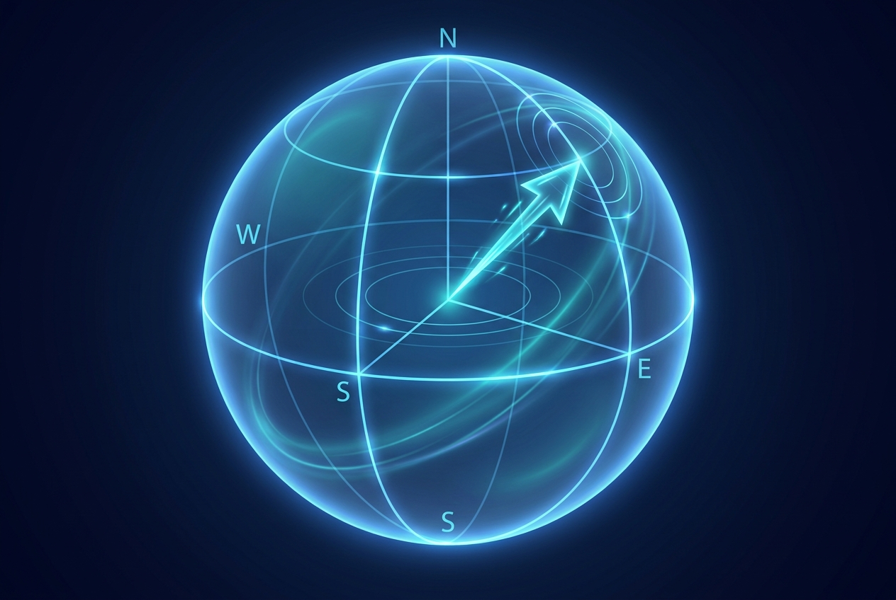
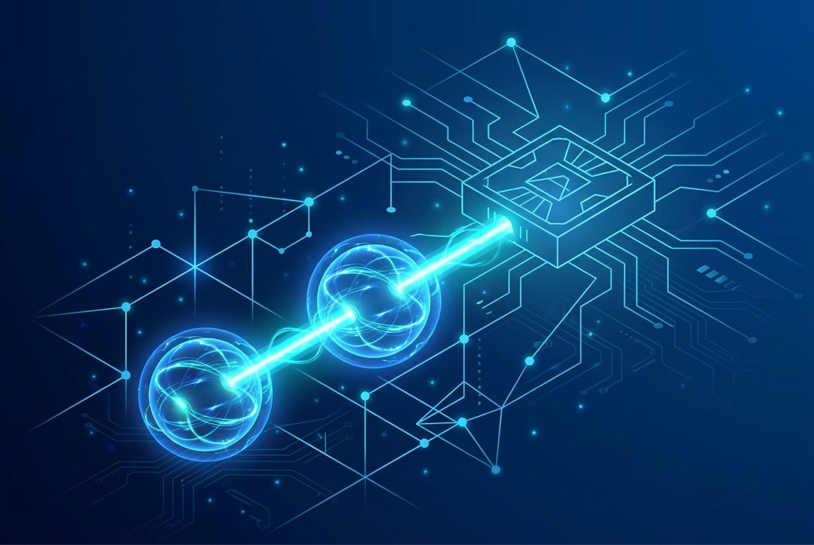
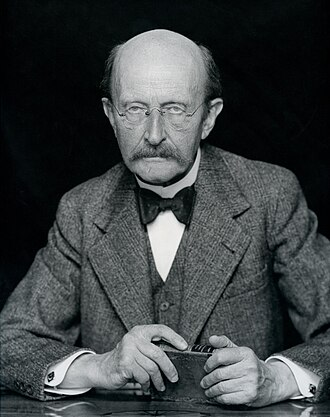
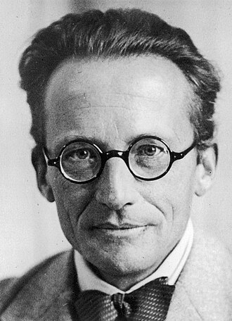
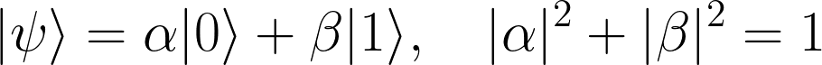

This glossary collects the core vocabulary of quantum computing used throughout the book, alongside the historical figures, hardware platforms, software ecosystems, and policy initiatives that shape the field. Definitions are written to be read on their own. Where a term has drifted in everyday usage, the entry gives the meaning that working practitioners intend in 2026.
Adiabatic Quantum Computer (AQC). A model of computation that exploits the adiabatic theorem of quantum mechanics. The machine is prepared in the ground state of a simple Hamiltonian, then the Hamiltonian is varied slowly enough that the system stays in its instantaneous ground state, ending in the ground state of a problem Hamiltonian that encodes the answer. It began as an approach to optimization and is provably equivalent in power to the standard gate (circuit) model. Quantum annealing, used commercially by D-Wave, is a related but more heuristic relative.
Algorithm. A finite set of instructions for solving a problem or completing a task. Computer code is algorithmic. Quantum algorithms are written for quantum hardware and aim to use superposition, entanglement, and interference to reach an answer with fewer steps than the best classical method.
Amazon Braket. Amazon Web Services' managed quantum computing service. It provides a development environment to design quantum algorithms, test them on simulators, and run them on several classes of real hardware (superconducting, trapped ion, and neutral atom) through a single interface.
Amplitude (Probability Amplitude). A complex number associated with each possible outcome of a quantum process. The probability of an outcome is the squared magnitude of its amplitude. Because amplitudes are complex, they can add constructively or cancel, which is the source of quantum interference.
Azure Quantum (Microsoft). A cloud platform that gives access to quantum hardware, simulators, and software from Microsoft and its partners through one open ecosystem, including the Q# language and resource-estimation tools.
Benioff, Paul. A physicist whose work in the late 1970s and early 1980s established the theoretical possibility of a quantum mechanical computer by describing a quantum version of the Turing machine. His later research spanned quantum computers, quantum robots, and the links between logic, mathematics, and physics.
Binary Values. Numbers expressed in the base-2 system using only two symbols, conventionally 0 and 1. Each digit is a bit (binary digit). Classical computers store and process information in bits.
Bit. The basic unit of classical information, taking exactly one of two values, 0 or 1. Contrast with the qubit.
Bohr, Niels. A Danish physicist who proposed an early quantum theory of the hydrogen atom in which some physical quantities take only discrete values. He received the 1922 Nobel Prize in Physics.
Bohr's Model of the Atom. A model in which electrons travel in fixed circular orbits around the nucleus, each orbit labeled by an integer quantum number n. Electrons jump between orbits by emitting or absorbing energy in discrete amounts.

Bloch Sphere. A geometric picture of a single qubit's state as a point on the surface of a unit sphere. The north and south poles represent the classical states 0 and 1, and every other point represents a superposition. Single-qubit gates correspond to rotations of the sphere.
Boson. A class of quantum particle with integer spin (0, 1, 2, and so on). Photons are bosons. Compare with fermion.
Classical Computing. Computation that stores and manipulates information in bits, each represented logically as either 0 (off) or 1 (on). This is the binary computing that runs essentially all of today's everyday hardware.
Classical Electromagnetic Theory. The theory built on Maxwell's equations that describes electric and magnetic fields and their behavior in circuits across the spectrum from direct current to optical frequencies.
Coherence. The condition in which a quantum system maintains a definite phase relationship between its component states. Coherence is what allows superposition and interference to be used for computation. It is fragile and decays through interaction with the environment.
Controlled-NOT Gate (CNOT). A two-qubit logic gate that flips a target qubit if and only if a control qubit is in state 1. The CNOT is a building block of gate-based quantum computers and is used to create and undo entanglement, for example to prepare Bell states.
D-Wave. A company that builds quantum annealers, special-purpose machines aimed at optimization and sampling problems rather than universal gate-model computation. Its Leap cloud service gives users direct access to its annealing hardware.
Decoherence. The loss of quantum coherence caused by uncontrolled interaction with the environment, including vibration, temperature changes, stray electromagnetic fields, and material defects. Decoherence destroys the superposition and entanglement that a computation relies on, and limiting it is the central engineering challenge of building useful quantum computers.
Deutsch, David. A physicist often called the father of quantum computing. He formulated the universal quantum computer and showed that quantum systems could outperform classical ones on certain tasks, setting the stage for quantum algorithm development.
Deutsch-Jozsa Algorithm. An early quantum algorithm that solves a contrived problem with a single query where any classical method may need many. It is mostly of historical and pedagogical value, as one of the first clear demonstrations of quantum speedup.
Dirac, Paul. An English theoretical physicist who made foundational contributions to quantum mechanics and quantum electrodynamics, including the equation that bears his name and the prediction of antimatter.
DiVincenzo's Criteria. A checklist, proposed by David DiVincenzo, of five requirements any physical platform must meet to be a viable quantum computer (a scalable system of well-characterized qubits, the ability to initialize them, long coherence times, a universal set of gates, and qubit-specific measurement), plus two further criteria for quantum communication.
Einstein, Albert. A theoretical physicist best known for the theory of relativity, who also made foundational contributions to quantum theory, including the explanation of the photoelectric effect. His skepticism about entanglement (the EPR paradox) helped sharpen the field's understanding of it.

Entanglement. A uniquely quantum correlation between two or more particles such that their states cannot be described independently. Measurements on entangled particles show correlations stronger than anything classical physics allows, no matter how far apart the particles are. Entanglement is a key resource for quantum computing and quantum communication.
Everett, Hugh. An American physicist who proposed the relative-state, or many-worlds, interpretation of quantum mechanics.
Fermion. A class of quantum particle with half-integer spin (one-half, three-halves, and so on), including electrons, protons, and neutrons. Fermions obey the Pauli exclusion principle. Compare with boson.
Feynman, Richard. An American physicist who, in the early 1980s, argued that simulating quantum systems efficiently would require a computer that is itself quantum, an insight widely credited with launching the field. He is also known for the path-integral formulation of quantum mechanics and for Feynman diagrams.
Gate (Quantum Gate). A basic reversible operation on one or a few qubits, the quantum analog of a classical logic gate. Gates are represented by unitary matrices. Examples include the Hadamard, Pauli-X, and CNOT gates. A sequence of gates forms a quantum circuit.
Grover, Lov. The originator of Grover's algorithm, which searches an unstructured database of N items in roughly the square root of N steps, a quadratic speedup over classical search. It was the second major quantum algorithm proposed.
Hadamard Gate. A single-qubit gate that places a qubit into an equal superposition of 0 and 1. It is one of the most frequently used gates and is represented by a 2 by 2 matrix. Applying it twice returns the qubit to its original state.
Heisenberg, Werner. A theoretical physicist best known for the uncertainty principle and for his formulation of quantum mechanics, published in 1925 when he was 23. He received the 1932 Nobel Prize in Physics.
IBM Qiskit. An open-source software framework for quantum computing. It provides tools to create, manipulate, and run quantum programs on IBM hardware or on simulators, along with libraries for algorithms, optimization, and error mitigation.
IBM Quantum. IBM's cloud platform for quantum computing, including the Quantum Composer (a visual circuit builder) and Quantum Lab (a notebook environment), offering both public and premium access to real quantum systems and simulators.
Interference. The addition and cancellation of probability amplitudes. Because amplitudes are complex numbers, paths leading to the same outcome can reinforce or cancel. Quantum algorithms are designed to make amplitudes for wrong answers cancel and amplitudes for the right answer add.
Logical Qubit. A qubit encoded across many physical qubits using quantum error correction, so that errors on the underlying hardware can be detected and corrected. A single logical qubit may require hundreds or thousands of physical qubits. Reaching a useful number of logical qubits is the threshold for fault-tolerant quantum computing.
Maxwell's Equations. A set of coupled partial differential equations that, with the Lorentz force law, form the foundation of classical electromagnetism, optics, and electric circuits. Maxwell first used them to show that light is an electromagnetic wave.
Measurement. The act of reading out a qubit, which forces its superposition to collapse to a definite classical value (0 or 1) with a probability set by the squared amplitudes. Measurement is irreversible and destroys the superposition being read.
Measurement-Based Quantum Computing (MBQC). Also called one-way quantum computing. A model that first prepares a large entangled resource state (a cluster or graph state), then carries out the computation purely through a sequence of single-qubit measurements, with each measurement's basis chosen based on earlier outcomes.
Modern Physics. The branch of physics that includes quantum mechanics, special relativity, and general relativity, as distinct from classical (Newtonian) physics.
Moore's Law. The observation, attributed to Gordon Moore, that the number of transistors on a chip roughly doubles every two years, with corresponding gains in computing capability. It describes classical hardware scaling and is unrelated to the scaling of quantum machines.
National Quantum Initiative Act. A U.S. law enacted in December 2018 that established a coordinated federal program to accelerate quantum information science and technology, including quantum computing, through agencies such as NIST, NSF, and the Department of Energy.
Neutral Atom Quantum Computer. A platform that encodes qubits in the internal states of individual neutral atoms held in optical tweezers, with entangling operations performed by exciting atoms to highly interacting Rydberg states. It has emerged as a leading approach for scaling to large qubit counts.
NISQ (Noisy Intermediate-Scale Quantum). A term coined by John Preskill in 2018 for the current era of quantum hardware: devices with tens to a few thousand qubits that are not yet error-corrected, so noise limits the depth of circuits they can run. NISQ machines are useful for research and experimentation but cannot yet run large fault-tolerant algorithms.
Newton's Laws. The laws of classical mechanics describing the relationship between the motion of an object and the forces acting on it.
Optimization. A class of problems that seek the best solution from many possibilities, such as routing, scheduling, and portfolio selection. Certain quantum algorithms and quantum annealers target optimization, though a clear, broad advantage over classical methods has not yet been established.
Pauli, Wolfgang. A physicist who made major contributions to quantum mechanics, quantum field theory, and solid-state physics, formulated the exclusion principle, and predicted the existence of the neutrino.
Photoelectric Effect. The emission of electrons from a material when light strikes it. Einstein's 1905 explanation, in which light delivers energy in discrete quanta (photons), was an early pillar of quantum theory.
Photonic Quantum Computer. A platform that encodes qubits in properties of light, such as the path, polarization, or timing of photons, processed through programmable photonic circuits. Photonic approaches operate at room temperature and are attractive for networking and scaling.

Planck, Max. A German theoretical physicist whose discovery that energy is emitted in discrete quanta launched quantum theory. He received the 1918 Nobel Prize in Physics.
Post-Quantum Cryptography (PQC). Cryptographic methods designed to remain secure against both quantum and classical computers, intended to replace today's public-key schemes that a large quantum computer could break using Shor's algorithm. NIST began standardizing PQC algorithms in 2024.
Probability. In quantum mechanics, the likelihood of a measurement outcome, equal to the squared magnitude of the corresponding probability amplitude. To find the probability of reaching a final state, one sums the amplitudes of all paths leading to it, then squares the result.
Qiskit. See IBM Qiskit.
Quantum Advantage. The point at which a quantum computer solves a practically useful problem faster, cheaper, or more accurately than any classical computer. It is a stronger and more meaningful milestone than quantum supremacy, which concerns any task regardless of usefulness.
Quantum Algorithm. A step-by-step procedure designed for a quantum computer that uses superposition, entanglement, and interference. Notable examples include Shor's factoring algorithm and Grover's search algorithm.
Quantum Annealing. A heuristic method for finding low-energy configurations of a problem encoded as an energy landscape, related to adiabatic computation. It is the operating principle of D-Wave's hardware and targets optimization and sampling.
Quantum Circuit Model. The most common model of quantum computation, in which an n-qubit register is transformed by a sequence of reversible (unitary) gates and then measured. It is the quantum analog of a classical logic circuit.
Quantum Computing. Computation that uses quantum phenomena such as superposition, entanglement, and interference to process information in ways that have no classical counterpart.
Quantum Error Correction (QEC). The set of techniques for protecting quantum information by encoding a logical qubit across many physical qubits, so that errors can be detected and corrected without measuring (and thus destroying) the data itself. QEC is what allows fault-tolerant quantum computing, and surface codes are the leading family of schemes.
Quantum Key Distribution (QKD). A secure communication method that uses quantum mechanics to let two parties share a random secret key. Any eavesdropper attempting to intercept the key disturbs the quantum states and is detected, so the key's secrecy is guaranteed by physics.
Quantum Mechanics. The fundamental theory describing the physical properties of nature at the scale of atoms and subatomic particles. It underlies quantum chemistry, quantum field theory, quantum technology, and quantum information science.
Quantum Memory. A device that stores a quantum state for later retrieval, the quantum analog of classical memory. Quantum memory is essential for quantum networks and repeaters.
Quantum Noise. Unwanted, random disturbances that corrupt quantum information, arising from decoherence, imperfect gates and measurements, and environmental interference. Managing noise is the defining problem of the NISQ era. (The term is also used in imaging to describe statistical fluctuation in detected photons, a separate meaning.)
Quantum Simulator. A device or program that models the behavior of a quantum system. Hardware quantum simulators are special-purpose machines that emulate physical systems too complex for classical computers, while software simulators reproduce the behavior of a quantum computer on classical hardware for small qubit counts.
Quantum Supremacy. The demonstration that a quantum computer can perform some task, even an artificial one, that no classical computer can complete in any reasonable time. First claimed by Google in 2019. Compare with the more demanding quantum advantage.
Quantum Teleportation. A protocol that transfers the exact quantum state of one particle to another distant particle using shared entanglement and classical communication. The original state is destroyed in the process, and no matter or energy is physically moved.
Quantum Turing Machine. An abstract model of a universal quantum computer, the quantum analog of the classical Turing machine. It captures the full power of quantum computation in a simple theoretical form.
Quantum Volume. A single-number benchmark, introduced by IBM, that measures the largest square quantum circuit (equal width and depth) a machine can run reliably. It captures qubit count, connectivity, gate fidelity, and measurement quality together, so it reflects usable performance rather than raw qubit count.
Qubit. The basic unit of quantum information, the quantum counterpart of the classical bit. A qubit is a two-state quantum system that can exist in a superposition of 0 and 1 until measured. Physical qubits are realized as superconducting circuits, trapped ions, neutral atoms, photons, and other two-level systems.
Rutherford's Model of the Atom. A model describing the atom as a tiny, dense, positively charged nucleus, holding nearly all the mass, around which light, negatively charged electrons orbit at a distance, much as planets orbit the Sun.

Schrodinger, Erwin. An Austrian theoretical physicist who formulated the wave equation governing how quantum states evolve in time.
Schrodinger's Cat. A thought experiment that dramatizes the paradox of superposition. A hypothetical cat is treated as simultaneously alive and dead, its fate tied to a random quantum event, until an observation forces a definite outcome.
Schrodinger's Equation. The linear partial differential equation that governs the wave function of a quantum system and describes how it changes over time. It is a central result of quantum mechanics.
Shor, Peter. An American mathematician at MIT, known for Shor's algorithm, which factors large integers exponentially faster than the best known classical method. Because the security of widely used public-key cryptography rests on the difficulty of factoring, Shor's algorithm is the main driver behind post-quantum cryptography.
Spin. An intrinsic form of angular momentum carried by elementary particles, composite particles, and atomic nuclei. Spin is quantized and is described by a spin quantum number. It is one of the physical properties used to encode qubits.
State Space. An abstract space whose points represent the possible states of a physical system rather than physical locations. In quantum mechanics it is a complex Hilbert space, and a system's instantaneous state is a unit vector within it.
Superconducting Qubit. A qubit built from superconducting electronic circuits operated at temperatures near absolute zero. It is one of the most mature platforms, used by Google, IBM, Rigetti, and others.

Superposition. A fundamental principle of quantum mechanics by which a quantum system can exist in a combination of distinct states at once. A qubit in superposition is part 0 and part 1 until measured. Superposition, together with entanglement and interference, is what gives quantum computers their distinctive power.
Trapped Ion Quantum Computer. A platform in which qubits are stored in stable electronic states of individual ions held in an electromagnetic trap, with quantum information exchanged through the shared, quantized motion of the ions. Trapped ions are known for long coherence times and high gate fidelity.
Turing, Alan. A British mathematician and logician whose 1936 paper "On Computable Numbers" defined the abstract model now called the Turing machine, a single universal device able to carry out any algorithm. His work laid the theoretical foundation of all computing.
Unitary Operation. A reversible, information-preserving transformation of a quantum state, represented by a unitary matrix. Every quantum gate is unitary, which is why quantum computation (apart from measurement) is reversible.
Wave Function. A mathematical description of the quantum state of an isolated system. It is a complex-valued probability amplitude, and the probabilities of measurement outcomes are derived from it.
[1] J. Preskill, "Quantum Computing in the NISQ era and beyond," Quantum, vol. 2, p. 79, 2018. Verify before publication.
[2] D. P. DiVincenzo, "The Physical Implementation of Quantum Computation," Fortschritte der Physik, vol. 48, 2000. Verify before publication.
[3] M. A. Nielsen and I. L. Chuang, Quantum Computation and Quantum Information, Cambridge University Press, anniversary edition. Verify before publication.
[4] National Institute of Standards and Technology, Post-Quantum Cryptography standardization program. Verify before publication.
[5] A. W. Cross et al., "Validating quantum computers using randomized model circuits" (Quantum Volume), Physical Review A, vol. 100, 2019. Verify before publication.